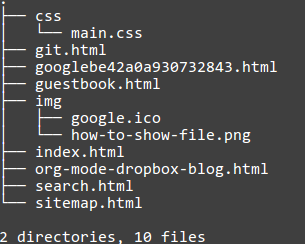

使用org-mode与dropbox搭建静态博客
org-mode
org-mode是emacs的一个主模式,所以如果你不用emacs那么一切都无从谈起,vim有一个org-mode的移植版本 根据官方的的说法:Org mode is for keeping notes, maintaining TODO lists, planning projects, and authoring documents with a fast and effective plain-text system.可以看出org-mode可以记笔记,管理TODO list等等,它最大 的特点是可以把你的文档折叠起来,而且有一个强大的导出系统,他可以将你的文档导出为html,pdf,postscript等等,而且 org-mode还有一个叫Babel的神器,它可以让你在文档中直接运行代码,支持的语言非常之多,我常用的C,python,lisp,dot等等 都支持,org-mode是一个宝库,只要你肯花时间总能发现惊喜.分享个高手的视频(需翻墙):
dropbox
DropBox 是一款非常优秀的免费网络文件同步工具(云存储服务)。当你在不同的电脑、平板、手机上都安装了 Dropbox 之后， 无论在其中任何一个设备上新增、修改或删除文件，Dropbox 将会通过网络全自动地将这个更改应用到你全部的设备上去，让 你所有的设备上的文件都能保持完全一致，并且可以随时随地使用你的文件！与国内的类似产品相比有以下优点：
- 全平台支持: dropbox支持windows，mac，linux，ios，android等，特别是它支持linux，这对于linux党简直就是福音, 这也是我使用dropbox的重要原因
- 稳定: 现在dropbox已经很稳定了，基本没有宕机的担忧了(记得金山快盘曾经因为技术问题使很多用户的文件被删掉了)， 而且它已经成为硅谷中比较成功的初创公司了,短期内不用担心它会倒闭了(YUNIO,坚果中枪了),而且dropbox是公司主力产 品,也不用担心它会无缘无故关闭(google reader的关闭让我很抓狂).
- 第三方工具众多,这相对于国内的类似产品是一个巨大的优势,dropbox有很多妙用基本都是利用第三方工具实现的,本文利用 dropbox搭建静态博客就是利用的pancake.io这个第三方应用.
那么dropbox的劣势主要是
- 可能被墙:facebook被墙我能理解,但dropbox被墙我是真的不理解,可是是事实是dropbox确实被墙过.
- 速度相对慢一些,这一点对我而言问题不大,因为同步本来就是后台应用,慢一点也无所谓.
打个广告,点这个链接http://db.tt/PtdhKnAr 注册dropbox后,你与我都可以获得500MB的空间奖励,双赢,何乐而不为呢,:)
搭建静态博客
目前搭建静态博客有很多种方法,很流行的一种就是利用github pages,我之所以不用这种方法是因为,这种方法不能和org-mode无缝 衔接,而且一旦文档修改就必须使用git将文档push到github上,比较麻烦,不像dropbox一旦改动自动同步.而且我觉得版本管理对编写 博客意义不大.
上文提到org-mode可以导出为html,这是搭建博客的基础,先配置org-mode:
1: (require 'org-publish) 2: (setq org-publish-project-alist 3: '( 4: ("blog-notes" 5: :base-directory "~/Documents/note/" 6: :base-extension "org" 7: :publishing-directory "~/Documents/blog/" 8: :recursive t 9: ;; :publishing-function org-publish-org-to-html ;;org 7.X 10: :publishing-function org-html-publish-to-html 11: ;; :link-home "index.html" 12: ;; :link-up "sitemap.html" 13: :html-link-home "index.html" 14: :html-link-up "sitemap.html" 15: :headline-levels 5 16: :section-numbers nil 17: :auto-preamble t 18: :auto-sitemap t ; Generate sitemap.org automagically... 19: :sitemap-filename "sitemap.org" ; ... call it sitemap.org (it's the default)... 20: :sitemap-title "Sitemap" ; ... with title 'Sitemap'. 21: :author "your name" 22: :email "your email" 23: ;; :style "<link rel=\"stylesheet\" type=\"text/css\" href=\"css/main.css\"/>" 24: :html-head "<link rel=\"stylesheet\" type=\"text/css\" href=\"css/main.css\"/>" 25: :html-preamble "可以添加博客的头部" 26: :html-postamble " 评论系统代码(disqus,多说等等) 27: <p class=\"author\">Author: %a (%e)</p><p>Last Updated %d . Created by %c </p>" 28: ) 29: ("blog-static" 30: :base-directory "~/Documents/note/" 31: :base-extension "css\\|js\\|pdf\\|png\\|jpg\\|gif\\|mp3\\|ogg\\|swf" 32: :publishing-directory "~/Documents/blog/" 33: :recursive t 34: :publishing-function org-publish-attachment 35: ) 36: ("blog" :components ("blog-notes" "blog-static")) 37: ;; 38: ))
主要的属性有以下几个:
- base-directory: 存放org-mode源文档的目录
- publishing-directory: 导出的html存放的目录
- html-preamble: 内容会添加到导出html的content的开头,我在preamble添加了博客的导航以及标题,如果你想简单点 那么这里可以去掉
- html-postamble: 内容会添加到导出html的content的开头与结尾, 我在在postamble添加了disqus的评论代码
- html-head: 要添加到导出的html的head标签内的代码,我添加了个css样式表(css/main.css)
需要注意,上面的配置是org版本是8.0,如果你用7.X版本,那么就是使用对应的注释代码,如将第十行的 org-html-publish-to-html换成org-publish-org-to-html.最后还需要一个css,这是我的css ,这个css还有点问题, 目前还在完善中.通过以上设置后,你在emacs中按M-x org-publish-project 然后输入blog就可以将base-directory 中的org文件导出到publishing-directory,静态文件也会相应的导出,这是我publishing-diretory的目录结构:

到这一步本地的配置基本就完成了,接着要用到pancake.io,先去 官网 直接用dropbox账号登陆,它会请求dropbox的权限,同意后就会在dropbox的Apps目录创建一个Pancake.io的目录,然后 将你刚刚导出的那些html文件(包括静态文件)都扔到Pancake.io目录中(我建议直接将publishing-directory设为your-dir/Dropbox/Apps/Pancake.io ), 如果你添加了博客的标题与导航,那么你可能还需要在publishing-directory中创建about.html, guestbook.html,search.html, 如何创建可以参见本博客的代码自行修改,注意本博客的搜索使用的是google的自定义搜索,所以你需要自己去创建并获得Id,替换
var customSearchControl = new google.search.CustomSearchControl('005863396545237100197:nhuiw5cz1q4');
中的ID.这样一个静态博客就大功告成了,以后你只要在你的base-directory编辑,增加org文档,然后调用org-publish-project, 那么博客就会自动更新,当然也建议更新index.org,就这么简单…